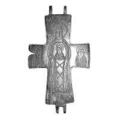

Catalog › CE-0555 · STE-1d
Valvă de encolpion de bronz cu Maica Domnului și sfinți (obr. 1 d)
sec. XII–XIII (1101–1300) · loc necunoscut · Muzeul de Istorie «Iskra», Kazanlak (Исторически музей «Искра» – Казанлък), fondul Arheologie–Medieval
single valve of a reliquary cross, bronz; c. XII–XIII (1101–1300); find spot unknown; kept at Muzeul de Istorie «Iskra», Kazanlak (Исторически музей «Искра» – Казанлък), fondul Arheologie–Medieval.


Identificare
- Categorie
- Valvă izolată
- Material
- Bronz
- Tehnică
- Turnare în relief; Gravare (incizie)
Iconografie
- Descriere avers
- Jumătate (față) dintr-un encolpion de bronz, cu imagini ale Maicii Domnului și ale unor sfinți.
Datare și atribuire
- Datare
- sec. XII–XIII (1101–1300)
Descoperire
- Context
- Necunoscut
- Coordonate
- 42.6194° N, 25.3930° E
- Precizia locului
- Loc de păstrare (loc de descoperire incert)
Păstrare și referințe
- Colecție
- Muzeul de Istorie «Iskra», Kazanlak (Исторически музей «Искра» – Казанлък), fondul Arheologie–Medieval
- Bibliografie
- Кр. Стефанова-Георгиева, Християнски символи (XI–XIII в.) – елементи от духовната култура на Казанлъшкия район, p. 595–598 [Стефанова-Георгиева, volum neidentificat în PDF], обр. 1 д, reprodusă la обр. 1 д (p. 597).
- Figura
- обр. 1 д
- Planșe
- Стефанова-Георгиева, p. 597
- Observații
- Provenit din fondul muzeului, fără loc al descoperirii cunoscut. Textul spune despre unele cruci din fond că pe față sunt Iisus Hristos și diferiți sfinți (Gheorghe, Teodor, Maica Domnului) și o inscripție; legenda figurii descrie această piesă doar ca având «Maica Domnului și sfinți». Autoarea spune că crucile sunt lucrate în tehnică mixtă (turnare și gravare ulterioară a detaliilor) și le datează în sec. XII–XIII; necropola din Krăn este datată în sec. XI–XIV. Locul descoperirii nu e cunoscut cu precizie; punctul de pe hartă marchează locul de păstrare (Muzeul de Istorie «Iskra»), nu locul descoperirii. Coordonate: nu sunt date în sursă.
Citare: Corpus Encolpiorum, CE-0555, Valvă de encolpion de bronz cu Maica Domnului și sfinți (obr. 1 d), --root/piese/STE-1d/ (accesat 2026-10-20).